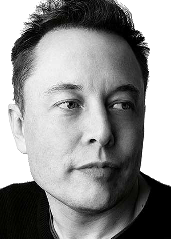
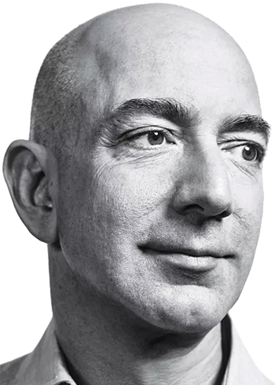
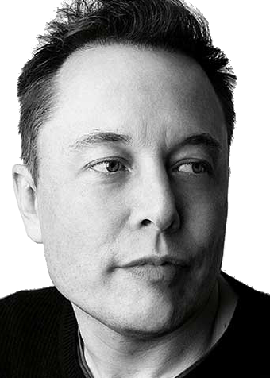
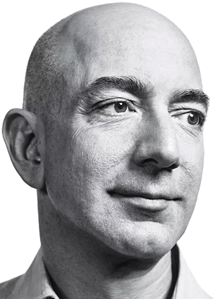

Sir Jonathan Paul Ive, KBE, HonFREng, RDI (born 27 February 1967) is an English industrial designer who is currently the Chief Design Officer (CDO) of Apple and Chancellor of the Royal College of Art in London. While working for a design firm in London he was asked by Apple, then a struggling company, to create a look for a new laptop. He took the design to Apple and was hired immediately. Ive oversees the Apple Industrial Design Group and also provides leadership and direction for Human Interface software teams across the company. Ive is the designer of many of Apple's hardware and software products.
Read More
 TECH MINDS
TECH MINDS
WHEN GENIUS MEETS TECH